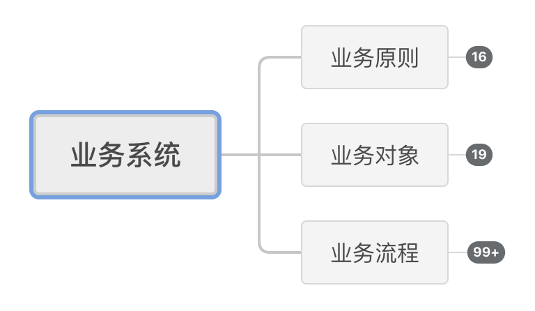

系统模型由系统边界、系统要素和要素联系三部分组成
构建
《论持久战》是1938年毛泽东在延安抗日战争研究会上的演讲稿，此时正值抗战十个月，国内存在着“中国必亡论”和“中国速胜论”的声音，毛泽东系统地阐述了中国实行持久战以获得对日胜利的战略。
我是抱着学习系统思考能力的目的来阅读此文的，而这个念头的认知则久远得多。
作为一个中国人，从小耳濡目染，多多少少都会对毛泽东的生平有一些了解，但直到高中，思想更为成熟，才第一次体会到了其作为一个战略家的魅力。
17年高考结束之后，偶然在电视上看到《东方战场》这部视角相比于其他战争剧更为宏阔的抗战剧，原本对这类电视剧不感兴趣的我一下子就被剧中的毛泽东吸引住了，特别期待看到他的出场，9月份到华科报道之前，特意和父母去了一趟韶山毛泽东故居纪念馆，集中浏览了反映其生平和思想的文物、资料，特别是当看到了《论持久战》的介绍时，内心有了更深的感触和敬仰。
到了19年，当我想要寻找途径学习如何进行系统思考的时候，《论持久战》这篇文章一下子就窜上心头，当时虽然也心怀期待，但读完之后仍超乎想象，深深惊叹于其精确、敏锐的要素提取能力和全面、客观的系统构建能力，其中让我印象最为深刻的一句话是：
1 | 中日战争不是任何别的战争，乃是半殖民半封建的中国和帝国主义的日本之间在二十世纪三十年代进行的一个决死的战争。全部问题的根据就在这里。 |
全部问题的根据就在这里，这句话是如此振聋发聩，以至于让我有一种醍醐灌顶的感觉。这就是一个系统，系统边界是二十世纪三十年代这个时代背景，系统要素是半殖民半封建的中国和帝国主义的日本，要素之间的关系是决死的战争，一切变化都逃不出这个系统，掌握了这个系统，就掌握了真相。这个系统的构建不仅仅是将这些东西简单罗列出来，还需要深入其内部去挖掘每一个特点，找出每一个角色的约束条件进行分别阐述。
帝国主义的日本：
- 其一，它的军力、经济力和政治组织力在东方是一等的，在世界也是五六个著名帝国主义国家中的一个
- 其二，由于日本社会经济的帝国主义性，就产生了日本战争的帝国主义性，它的战争是退步的和野蛮的
- 其三，日本战争虽是在其强的军力、经济力和政治组织力的基础之上进行的，但同时又是在其先天不足的基础之上进行的。日本的军力、经济力和政治组织力虽强，但这些力量之量的方面不足
半殖民半封建的中国：
- 其一，从鸦片战争，太平天国，戊戌维新，辛亥革命，直至北伐战争，一切为解除半殖民地半封建地位的革命的或改良的运动，都遭到了严重的挫折，因此依然保留下这个半殖民地半封建的地位
- 其二，中国近百年的解放运动积累到了今日，已经不同于任何历史时期。各种内外反对力量虽给了解放运动以严重挫折，同时却锻炼了中国人民
- 其三，中国又是一个很大的国家，地大、物博、人多、兵多，能够支持长期的战争，这同日本又是一个相反的对比
- 其四，由于中国战争的进步性、正义性而产生出来的国际广大援助，同日本的失道寡助又恰恰相反
将角色特点的充分集挖掘出来，并将他们进行联系，才能构架出具有指导意义的系统模型，才能得出“规定了和规定着双方一切政治上的政策和军事上的战略战术，规定了和规定着战争的持久性和最后胜利属于中国而不属于日本”的结论。
这个模型提取出来后我管它叫系统模型，由三个部分组成——系统边界、系统要素和要素联系。
运用
我把这个模型迁移到了产品实习的工作中进行验证，在这个运用中，我构建的系统由三个部分组成：
- 业务原则——对应系统边界
- 业务对象——对应系统要素
- 业务流程——对应系统联系

业务原则学习了瑞·达利欧《原则》的观点，根据对业务的理解总结了几个在工作过程中需要牢牢记住的概念，并且把它落实为一个可以自查的清单，这样可以很大程度上避免犯错带来的损失
业务对象则是在工作过程中需要应对的人和产品，像上文那样将他们的特点挖掘出来
业务流程则是在业务原则的边界下将业务对象及其他们的特点正确地联系起来，形成一套具体指导工作的方法论
具体内容涉及公司信息，就不展开了，运用的结果是它让我非常快就能够看清如何融入到AI产品业务这个系统之中，这为我后续的工作打下了坚实的基础。
延展
其延展性可以分为两块来讨论，其一是组合，其二是结合。
组合时将系统模型作为前置框架，后续利用其他模型进行进一步分析，如系统模型作为指导，后续使用系统动力图模型进行分析。
结合时利用其它模型特征将系统模型进行改造，如利用齿轮模型来构建系统联系，发现系统要素的关键联系。